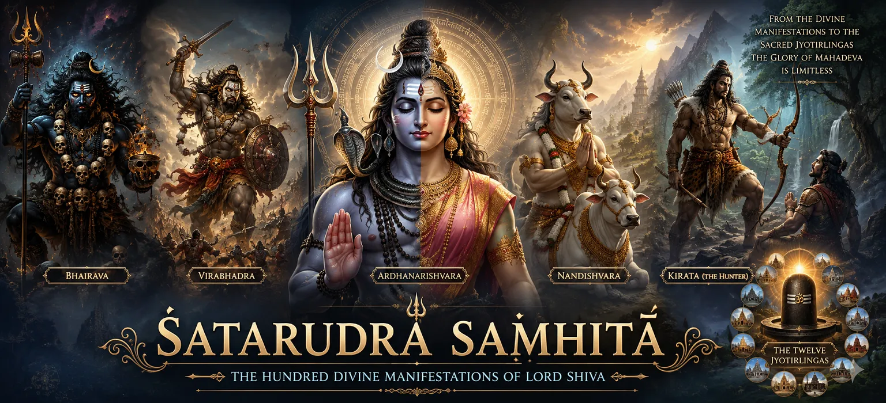

Welcome to Shatarudra Samhita
শতরুদ্র সংহিতায় আপনাকে স্বাগতম
Shatarudra Samhita is the third sacred section of the Shiva Purana in the seven-Samhita edition followed on Bholenath Dham. Across forty-two chapters it reveals how the one, formless and limitless Shiva becomes approachable through divine forms. The five faces of the supreme Brahman, Shiva's eight cosmic forms, Ardhanarishvara, Nandishvara, Bhairava, Sharabha, Grihapati, Yaksheshvara, Durvasa, Hanuman, Pippalada and Kirata appear within this extraordinary spiritual panorama.
These manifestations do not divide the Supreme into competing deities. Each form discloses a purpose suited to a particular need: preserving cosmic balance, protecting a devotee, correcting arrogance, revealing knowledge, testing courage or establishing dharma. The Samhita therefore teaches unity through diversity—many sacred appearances, one eternal consciousness and one inexhaustible compassion.
Shatarudra Samhita at a Glance
42 Sacred Chapters
৪২টি পবিত্র অধ্যায়
A complete journey through Shiva's cosmic forms, incarnations, tests and blessings.
Many Forms, One Shiva
বহু রূপ, এক শিব
Every manifestation expresses the freedom and compassion of the same Supreme Lord.
Ardhanarishvara
অর্ধনারীশ্বর
The indivisible harmony of Shiva and Shakti, consciousness and creative power.
Nandishvara
নন্দীশ্বর
Devotion, service and steadfast nearness to Lord Shiva receive sacred recognition.
Protective Manifestations
রক্ষাকারী প্রকাশ
Bhairava, Sharabha and other forms confront pride, disorder and destructive power.
Kirata and Arjuna
কিরাত ও অর্জুন
The celebrated final narrative tests valor, humility and recognition of the Divine.
What Does “Shatarudra” Reveal?
The title Shatarudra evokes the abundance of Rudra's forms. “Hundred” functions as a sacred image of multiplicity: Shiva cannot be confined to one appearance, role or relationship. He is the stillness of meditation and the force that dissolves obstruction; the teacher who speaks wisdom and the mysterious stranger who tests whether wisdom has truly entered the heart.
The first chapters establish a theological map through the five incarnations of the supreme Brahman and the eight forms of Shiva. The vision then becomes intimate through Ardhanarishvara, showing that consciousness and Shakti are not two independent realities. The story of Rishabha and the enumeration of nineteen incarnations prepare the reader for a long series of sacred narratives in which divine truth takes the form required by each circumstance.
As the chapters proceed, Shiva appears within homes, forests, courts, battlefields, vows and moments of danger. The divine is therefore not distant from ordinary life. Shatarudra Samhita repeatedly suggests that the form may change, but the spiritual invitation remains constant: release pride, uphold dharma, serve faithfully, recognize grace and seek the one Shiva within every sacred appearance.
Six Currents of Divine Manifestation
Cosmic Forms
মহাজাগতিক রূপ
The five and eight forms reveal Shiva through universal principles.
Unity of Shiva-Shakti
শিব-শক্তির ঐক্য
Ardhanarishvara dissolves division between consciousness and power.
Devotee Protection
ভক্তের সুরক্ষা
Grihapati, Pippalada and other narratives reveal responsive grace.
Correction of Pride
অহংকার সংশোধন
Bhairava, Sharabha and Yaksheshvara expose the limits of power.
Hidden Teacher
গুপ্ত শিক্ষক
Shiva appears as ascetic, brahmin, merchant, beggar and mysterious guide.
Radiant Presence
জ্যোতির্ময় উপস্থিতি
The Twelve Jyotirlingas conclude the Samhita with accessible sacred presence.
Chapters of Shatarudra Samhita → Part 1
Begin with Shiva's foundational cosmic forms, Ardhanarishvara, Rishabha, Nandishvara and the powerful Bhairava–Narasimha–Sharabha sequence.
From Panchabrahma to Sharabha
পঞ্চব্রহ্ম থেকে শরভ
Review how cosmic symbolism develops into protective divine manifestation.
Explore the FormsChapters of Shatarudra Samhita → Part 2
Continue through Sharabha, the three-part Grihapati narrative, Yaksheshvara, grouped incarnations, Durvasa, Hanuman and Mahesha.
Grihapati and Responsive Grace
গৃহপতি ও সাড়া দেওয়া কৃপা
Reflect on courage, worship and the protection received through unwavering faith.
Explore the TeachingWhen Shiva Corrects Pride
যখন শিব অহংকার সংশোধন করেন
See how immense power becomes complete only through humility before the Supreme.
Explore the ThemeChapters of Shatarudra Samhita → Part 3
Discover Shiva as Vrisabha, Pippalada, Vaishyanatha, Dvijeshvara, Yatinatha Hamsa, Krishnadarshana, Avadhuteshvara and Bhikshuvarya.
The Lord in Ordinary Disguise
সাধারণ ছদ্মবেশে পরমেশ্বর
Learn why Shiva approaches devotees as merchant, brahmin, ascetic, swan and beggar.
Explore the TeachingRecognition Beyond Appearance
রূপের অতীত পরিচয়
Reflect on hospitality, humility and recognizing sacred presence without outward grandeur.
Read the ReflectionChapters of Shatarudra Samhita → Part 4
The concluding movement passes through Sureshvara, Jatila, Sunartaka Nata, Ashvatthaman and the five-chapter Kirata–Arjuna narrative before revealing the Twelve Jyotirlingas.
Continue to Kotirudra Samhita
কোটিরুদ্র সংহিতায় অগ্রসর হোন
Continue with the detailed sacred histories and worship of Shiva's Jyotirlingas.
Open Kotirudra SamhitaFrom Cosmic Principle to Compassionate Form
The five incarnations of the supreme Brahman and the eight forms of Shiva teach the reader to perceive divinity through the structure of existence itself. Shiva is not limited to a single image within a shrine. The elements, directions, cosmic functions and living awareness can all become reminders of the sacred when contemplated with knowledge.
Ardhanarishvara brings this vast vision into one unforgettable form. Shiva and Shakti share a single body, revealing that still consciousness and dynamic creativity belong to one reality. Spiritual maturity therefore does not demand hostility between contemplation and action, masculine and feminine, transcendence and immanence; it seeks their sacred balance.
Nandishvara, Grihapati and the Strength of Devotion
Nandishvara represents steadfast service transformed into sacred authority. Grihapati's multi-chapter narrative shows devotion responding to mortality, fear and uncertainty with worship rather than despair. Together these accounts teach that grace does not make the devotee passive. It awakens courage, constancy and the determination to place every difficulty before Lord Shiva.
Bhairava, Sharabha and the Humbling of Power
The fierce forms in Shatarudra Samhita must be read through their spiritual function. Bhairava confronts transgression, impurity and the misuse of authority; Sharabha appears within a crisis of overwhelming power. Their intensity is not cruelty for its own sake. It protects cosmic order and reveals that power without self-knowledge can become destructive even when it began with a righteous purpose.
Yaksheshvara and several later disguises continue this lesson through gentler means. Gods, sages and human beings are repeatedly asked to look beyond status and appearance. The one who seems ordinary may carry the highest wisdom; the one who appears powerless may expose the limits of worldly strength.
The Kirata–Arjuna Journey
The final narrative arc unfolds carefully across Chapters 37–41. Vyasa's instruction establishes the need for spiritual preparation; Arjuna undertakes penance; the demon Muka creates a moment of conflict; the hunter and warrior then dispute, contend and finally recognize one another. The progression matters because divine blessing follows tested effort rather than impatient demand.
Arjuna's strength is real, yet strength alone cannot recognize Shiva. He must persist without arrogance, fight without losing purpose and finally bow when truth is revealed. The Kirata episode therefore joins heroism with surrender. It teaches that the highest weapon is entrusted to one whose courage has been purified by humility.
The Twelve Jyotirlingas: Light Made Accessible
Chapter 42 gathers the Samhita's teaching into the Twelve Jyotirlinga incarnations. After meeting Shiva in cosmic principles, fierce protectors, devoted servants, humble disguises and the Kirata hunter, the reader encounters Him as sacred light abiding at places of worship. The transition prepares the next Samhita, Kotirudra, where the Jyotirlingas and their holy narratives receive fuller treatment.
Spiritual Benefits of Reading Shatarudra Samhita
Recognition of Shiva
শিবকে চিনে নেওয়া
Steadfast Devotion
অটল ভক্তি
Vision of Unity
একত্বের দৃষ্টি
Freedom from Pride
অহংকার থেকে মুক্তি
Disciplined Courage
শৃঙ্খলিত সাহস
Sacred Awareness
পবিত্র চেতনা
How to Read Shatarudra Samhita
Read the chapters in order because several stories continue across two or three chapters, especially the Grihapati, Pippalada and Kirata narratives. Keep the chapter title in mind as you read, but look beyond the event to its spiritual function. Ask what is being protected, what form of pride is being corrected and what quality the devotee is being invited to cultivate.
Do not assume that every form must be interpreted in exactly the same way. Some chapters are theological classifications, some are devotional legends, some describe divine tests and others connect sacred presence with pilgrimage. Their unity lies not in identical storytelling but in the recognition that Shiva's grace meets creation through many appropriate forms.
Spiritual Reflection
আধ্যাত্মিক ভাবনা
If we expect the Divine to appear only in familiar beauty, authority or comfort, we may overlook the teacher standing before us. Shatarudra Samhita expands spiritual vision: Shiva may arrive as unity, servant, protector, stranger, ascetic, beggar, hunter or sacred light. The form asks for attention; the essence asks for recognition.
Frequently Asked Questions
① What is Shatarudra Samhita?
Shatarudra Samhita is the third section of the seven-Samhita Shiva Purana. It reveals Shiva through cosmic forms, incarnations, protective manifestations, humble disguises and Jyotirlingas.
② How many chapters does Shatarudra Samhita contain?
The edition used for this directory contains forty-two chapters, beginning with the five incarnations of the supreme Brahman and ending with the Twelve Jyotirlinga incarnations.
③ What is the main teaching of the many Shiva forms?
The forms demonstrate that one Supreme Reality can guide creation in many ways. Diversity of appearance does not destroy divine unity; it makes grace accessible to different beings and circumstances.
④ Why is Ardhanarishvara important?
Ardhanarishvara reveals Shiva and Shakti as an indivisible reality. Consciousness and creative power, stillness and action, are complementary dimensions of one Divine.
⑤ What does the Kirata story teach?
It teaches perseverance, disciplined courage, humility and the need to recognize divine presence beyond expected appearances. Arjuna receives grace after both effort and ego are tested.
⑥ How does this Samhita connect to Kotirudra Samhita?
Shatarudra concludes with a concise revelation of the Twelve Jyotirlingas. Kotirudra Samhita then develops the Jyotirlinga traditions, sacred places and devotional worship in greater detail.
“The forms of Rudra are many because compassion meets every being differently; the light within all those forms is eternally one.”
Begin Your Journey Through Shatarudra Samhita
Having completed Rudra Samhita, continue into Shiva's many cosmic and compassionate manifestations. Begin with the five incarnations of the supreme Brahman and follow the sacred sequence through Ardhanarishvara, Nandishvara, Bhairava, Kirata and the Jyotirlingas.